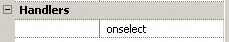

handler miOptionsAbout.onselect() {
alert("SimpleCalc\nAn OrbForms sample application");
}
alert is a function that creates a popup message box. Inside the
message box, it displays the text you passed in.
In this lesson, you will learn how a simple calculator can be developed quickly. Instead of going through the entire development phase, we will just highlight the key steps. By now, you should be able to create new projects using the project wizard, build the project, and copy the compiled .prc file to the emulator or the actual device with the OrbFormRT.prc installed.
To the main form we add 16 buttons and one field, and give each one of them a name and a text string. Adding a button is as easy as right-clicking the form and selecting "Add Button". Once all the buttons are added, arrange them neatly and change the names and text so that your environment looks something like the picture below. Also, change the properties of the field such that it uses the LED font, is not editable, and has no underline.
| Form's Tree Structure in the Workspace | Form Layout in the Visual Design |
|
the button's name is used during coding. They are used to represent the button in the Workspace |
the button's text is used during the programming running. |
The calculator looks pretty good now. However it doesn't do anything when you run it. To make it function, we need to add handlers for all the buttons.
When you click on the button in the tree or on the form, the Inspection bar will display the button's properties, size, and handlers.
A button has only one handler which is onselect. This handler is executed whenever the user taps on the button.
| Bold handler text indicates the event is already handled. Clicking on the text will jump to the location in source code where the handler is defined. | |
|  | Normal handler text indicates the event is not yet handled. Clicking on the handler name will generate code to handle the event for you. |
Since all the number buttons do essentially the same thing, we've created a function called "doNumber" to do the actual work for each button. So, the code to handle each event is rather simple.
handler key0.onselect() {
doNumber(0);
}
handler key1.onselect() {
doNumber(1);
}
|
The complete code can be found in the SimpleCalc sample directory.
The calculation result must be displayed on the screen. We will use a field to accomplish this task. A field's text can be set and retrieved during the program execution through the field's "text" property. We initialize this field to "0" when the main form opens.
handler mainForm.onopen() {
fldResult.text = "0";
}
|
|
This is a handler for mainForm's onopen event. mainForm is the calculator's form fldResult is a Field we added in the mainForm fldResult.text is a property of the field which allows us to get/set the text it displays. |
The display also needs to be updated each time the user enters a number. This is the function that all of the number button handlers call:
void doNumber(int num) {
operand = operand * 10 + num;
fldResult.text = operand;
}
|
For a complete list of the field's properties and methods, refer to the UIField object the Library Reference.
A menu item has an onselect handler as well. In our case, we want to make a menu item whose text is "About...". In order to add a menu item, we must first add a menu bar and a menu. First, create a menu bar on the main form called "mbarMain". Traditionally the "About" menu item in a Palm application resides in a menu named "Options", so add a menu to mbarMain called "menuOptions" whose text is "Options". Finally, add a menu item to menuOptions called "miOptionsAbout". Set its text to "About...", and its shortcut to "A". When the user select the "About..." menu item, we want to display a message box with the program's description.
| What you see in the Workspace and Inspection bar. | |
| Handler source |
handler miOptionsAbout.onselect() {
alert("SimpleCalc\nAn OrbForms sample application");
}
alert is a function that creates a popup message box. Inside the
message box, it displays the text you passed in. |
| Final result when the user selects the About menu | |
These are all the major parts of a simple calculator. You should now be comfortable adding custom handlers on your own. In order to take full advantage of each type of control, study the User Interface section of the Library Reference.
1. A field is a very powerful user interface element. Can you make the output display in different fonts? Or add an underline to the output number?
2. In the current calculator state, f you try to divide a number by 0 a runtime error will occur. It is not a desirable thing to have runtime errors. Can you add a feature that when the user tries to divide a number by 0, an alert box pops up and tell the user that this operation is invalid?